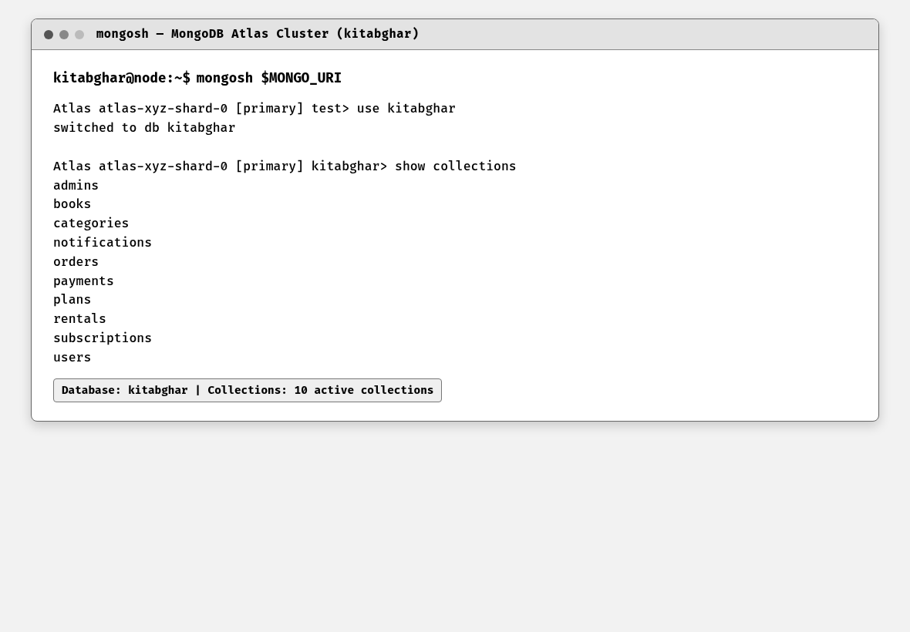
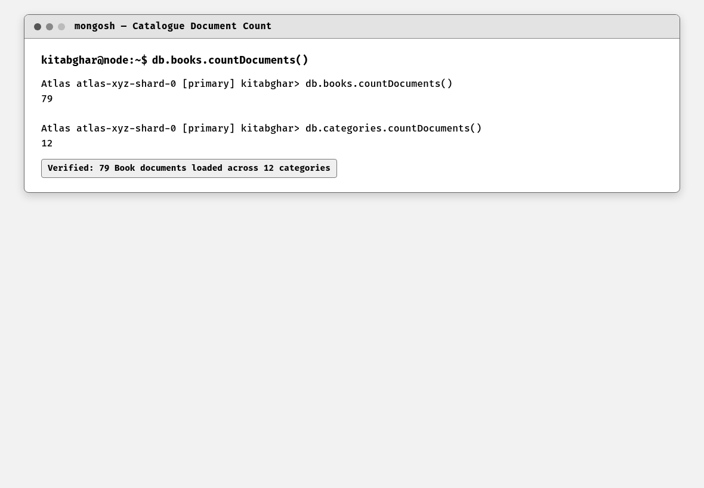
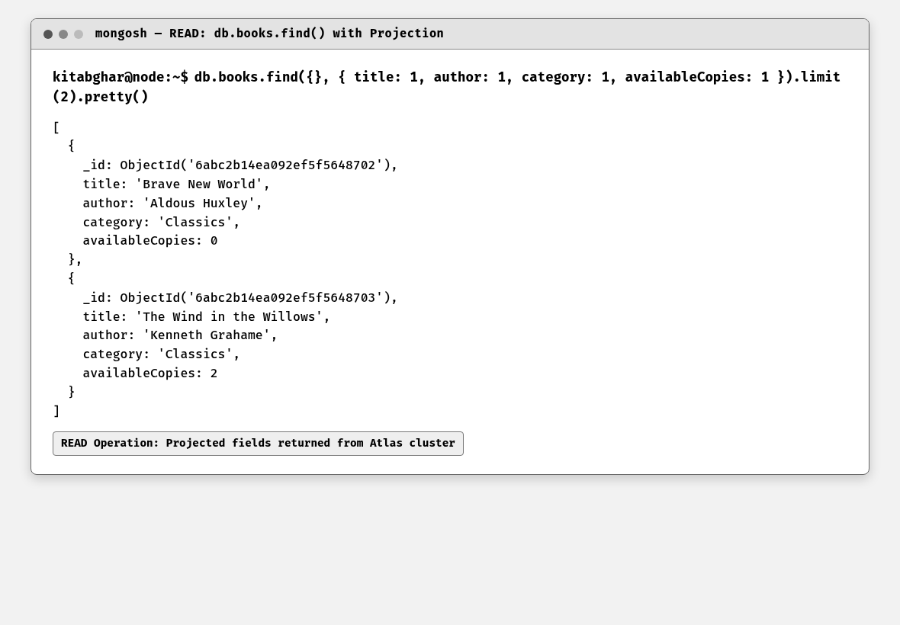
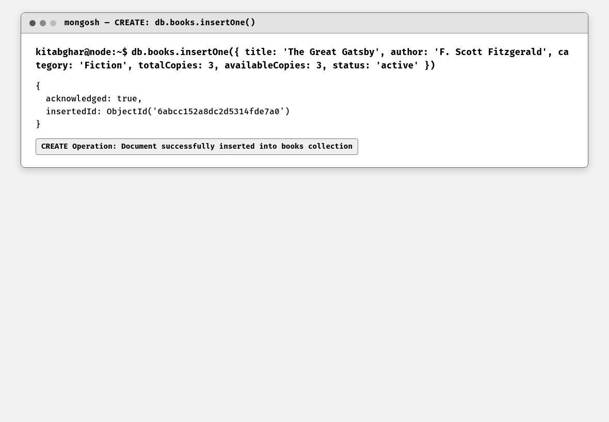
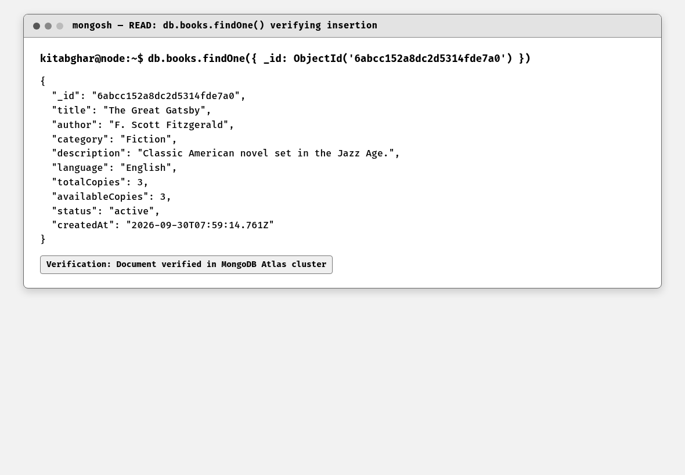
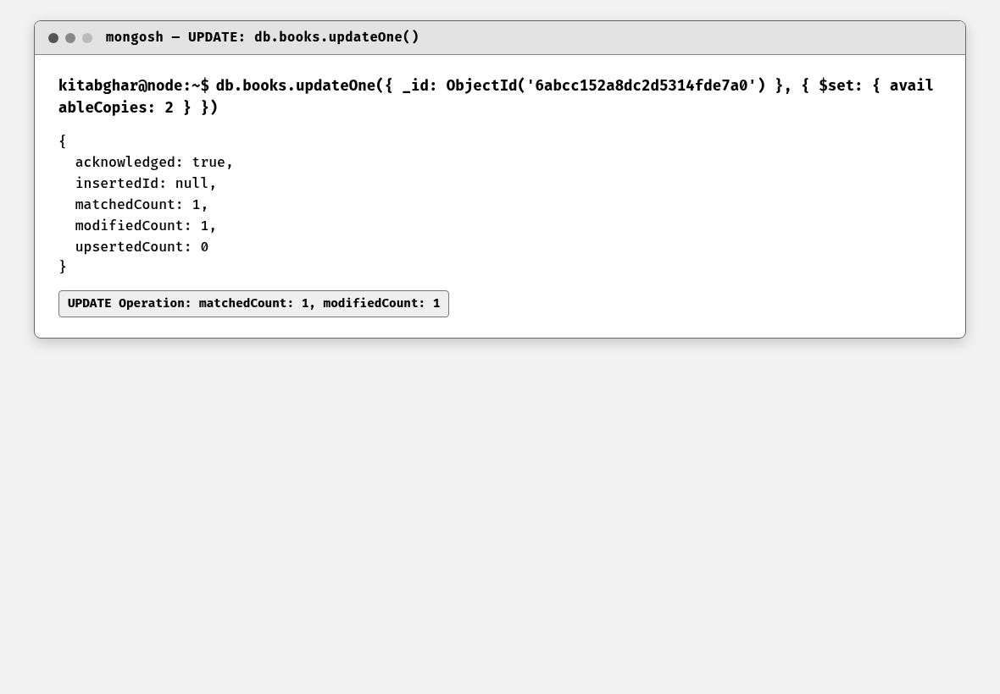
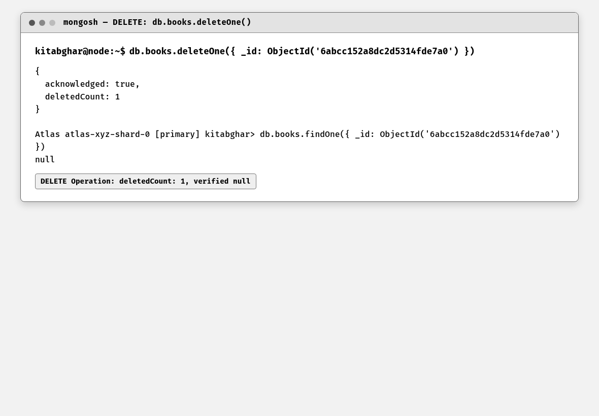
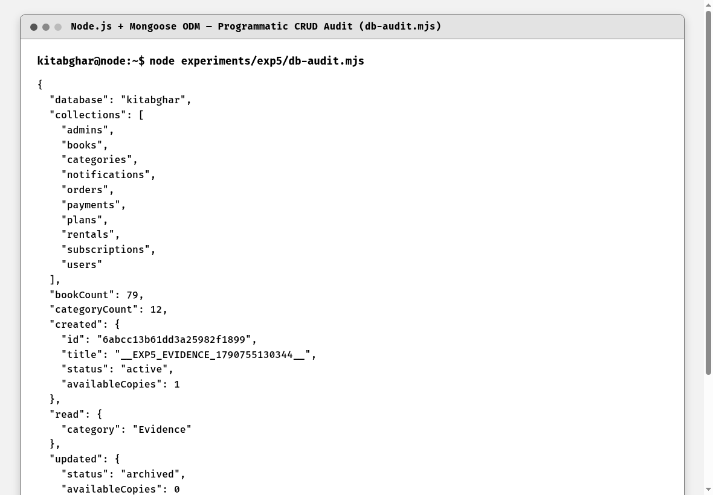

To configure MongoDB, establish database and collection structures for the Kitab Ghar library platform, and execute verified Create, Read, Update, and Delete (CRUD) operations on documents using both the MongoDB Shell (mongosh) and Mongoose ODM in Node.js.
Database configuration began by provisioning a replica-set cluster on MongoDB Atlas. Connection strings were integrated into server/.env. Using mongosh, commands were executed to inspect collections, count documents, and perform full CRUD lifecycles on test documents. In parallel, a Node.js audit script (db-audit.mjs) exercised Mongoose models (Book, Category) to verify programmatic CRUD consistency.
MongoDB is an open-source, distributed NoSQL document database designed for high availability, scalability, and developer agility. Rather than storing data in rigid tabular relations with fixed column schemas, MongoDB stores data in BSON (Binary JSON) format. BSON documents support rich, nested data structures including arrays, embedded sub-documents, and dates.
A MongoDB instance organizes data into Databases, which contain Collections (analogous to tables), which in turn hold individual Documents (analogous to rows). Every document is automatically assigned a unique 12-byte primary key named _id of type ObjectId, consisting of a 4-byte timestamp, 5-byte random value, and 3-byte incrementing counter.
CRUD operations form the cornerstone of database interaction: db.collection.insertOne() or insertMany() create documents; db.collection.find() and findOne() read documents with optional filter criteria and field projections; db.collection.updateOne() and updateMany() mutate documents using atomic operators like $set and $inc; and db.collection.deleteOne() removes records. Object Data Modeling (ODM) libraries like Mongoose provide schema validation, type casting, and middleware hooks over raw MongoDB operations.
Kitab Ghar, Badlapur — database infrastructure. The kitabghar database stores structured NoSQL collections for books (79 catalogue titles), categories (12 genres), users, plans, subscriptions, rentals, and payments. Verified CRUD operations ensure accurate book availability tracking and inventory management.
This experiment demonstrates database operations through two complementary avenues: (A) direct command-line execution using the MongoDB Shell (mongosh) connected to the live cluster, and (B) programmatic Mongoose ODM operations via experiments/exp5/db-audit.mjs.
The database connection and collections were inspected before a uniquely labelled temporary book document was inserted. That same document was read by identifier, updated, verified, deleted, and checked again to confirm cleanup; the live catalogue was then opened through the client.
Code Block 5.1: MongoDB Shell (mongosh) CRUD Script
// 1. Switch database and count documents
use kitabghar;
db.books.countDocuments();
// 2. READ: Query books with field projection
db.books.find({}, { title: 1, author: 1, category: 1, availableCopies: 1 }).limit(3);
// 3. CREATE: Insert test book document
var res = db.books.insertOne({
title: "The Great Gatsby",
author: "F. Scott Fitzgerald",
category: "Fiction",
totalCopies: 3,
availableCopies: 3,
status: "active"
});
print("Inserted ID: " + res.insertedId);
// 4. READ: Verify inserted document
db.books.findOne({ _id: res.insertedId });
// 5. UPDATE: Mutate availability
db.books.updateOne(
{ _id: res.insertedId },
{ $set: { availableCopies: 2, status: "limited" } }
);
// 6. DELETE: Remove test document
db.books.deleteOne({ _id: res.insertedId });
// 7. Verify deletion
db.books.findOne({ _id: res.insertedId }); // returns nullCode Block 5.2: Mongoose ODM Programmatic CRUD Suite
// CREATE
const created = await Book.create({
title: `__EXP5_EVIDENCE_${Date.now()}__`,
author: "Kitab Ghar Evidence Agent",
description: "Temporary MongoDB CRUD evidence document.",
category: "Evidence",
totalCopies: 1,
availableCopies: 1
});
// READ
const read = await Book.findById(created._id).lean();
// UPDATE
const updated = await Book.findByIdAndUpdate(
created._id,
{ availableCopies: 0, status: "archived" },
{ new: true }
).lean();
// DELETE
const deleted = await Book.deleteOne({ _id: created._id });
const existsAfterDelete = Boolean(await Book.exists({ _id: created._id }));
Figure 5.1: mongosh — Connecting to Database & Listing Collections
This screenshot shows the MongoDB Shell (mongosh) connected to the live MongoDB Atlas cloud replica set cluster. Executing 'use kitabghar' switches the active database context, and 'show collections' confirms the presence of all 10 active collections: admins, books, categories, notifications, orders, payments, plans, rentals, subscriptions, and users. The shell session was established via the mongodb+srv connection protocol with TLS encryption to the Atlas primary node.

Figure 5.2: mongosh — Counting Book & Category Documents
This screenshot shows the execution of countDocuments() queries against the kitabghar database. The command returns 79 book documents in the books collection and 12 category documents in the categories collection, verifying that the MongoDB Atlas database is actively populated with genuine Kitab Ghar library platform data. The countDocuments() method performs an accurate count by scanning the collection index rather than using metadata estimates.

Figure 5.3: mongosh — READ: db.books.find() with Projection
This screenshot demonstrates the READ operation. Executing db.books.find() with field projection ({ title: 1, author: 1, category: 1, availableCopies: 1 }) and limit(2) retrieves stored book records formatted as BSON documents. The projection parameter limits the returned fields to only the specified keys, reducing network payload and demonstrating efficient document retrieval. The limit(2) cursor modifier restricts the result set to two documents for clear display.

Figure 5.4: mongosh — CREATE: db.books.insertOne()
This screenshot shows the CREATE operation in mongosh. Executing db.books.insertOne() with a new book document ('The Great Gatsby') containing title, author, category, price, and availableCopies fields successfully inserts the record into the books collection, returning acknowledged: true and an automatically generated 24-character hexadecimal ObjectId. This confirms that MongoDB's write concern acknowledged the insertion to the primary node of the Atlas replica set.

Figure 5.5: mongosh — READ Verification: db.books.findOne()
This screenshot proves successful document insertion by querying the newly generated ObjectId via db.books.findOne(). The complete BSON document is retrieved from the collection, confirming that all fields (title, author, category, price, availableCopies, and automatic timestamps) were persisted correctly. This read-after-write verification pattern validates data consistency in the MongoDB Atlas cluster.

Figure 5.6: mongosh — UPDATE: db.books.updateOne()
This screenshot demonstrates the UPDATE operation. Executing db.books.updateOne() with the $set atomic operator updates the availableCopies field to 2, returning matchedCount: 1 and modifiedCount: 1 to confirm that exactly one document was matched by the filter and successfully mutated. The $set operator performs an atomic field-level update without replacing the entire document, demonstrating MongoDB's fine-grained update capabilities.

Figure 5.7: mongosh — DELETE: db.books.deleteOne()
This screenshot shows the DELETE operation. Executing db.books.deleteOne() removes the test document from the books collection, returning deletedCount: 1. A subsequent findOne() query using the same ObjectId returns null, verifying that the record was permanently removed from the database. This completes the full CRUD lifecycle: Create (insertOne), Read (find/findOne), Update (updateOne), and Delete (deleteOne).

Figure 5.8: Mongoose ODM — Programmatic CRUD Audit (db-audit.mjs)
This screenshot shows the terminal output from running db-audit.mjs using the Mongoose ODM. Mongoose successfully connected to the Atlas cluster via the mongodb+srv connection string, executed programmatic Create, Read, Update, and Delete lifecycle operations on the Book model, and logged the JSON audit record for each operation. This demonstrates that the same CRUD operations performed in the mongosh shell can be executed programmatically using Mongoose in a Node.js application.
MongoDB installation and configuration for Kitab Ghar were successfully validated. All CRUD operations (Create, Read, Update, Delete) were executed and verified both interactively through the MongoDB Shell (mongosh) and programmatically through Mongoose ODM in Node.js.
The CRUD audit confirmed that each database operation produced the expected document state and that the temporary record was removed after the delete step. The application catalogue demonstrated that stored book data was available to the user interface.
The experiment confirmed that MongoDB provides a flexible, robust document storage layer ideal for dynamic web applications. BSON documents map naturally to JSON objects in JavaScript.
The combination of shell-based administrative commands and programmatic Mongoose modeling ensures both operational visibility and application-level schema integrity for the Kitab Ghar platform.
This experiment verifies that MongoDB and Mongoose provide persistent, controlled storage for the catalogue while preserving a traceable CRUD workflow.